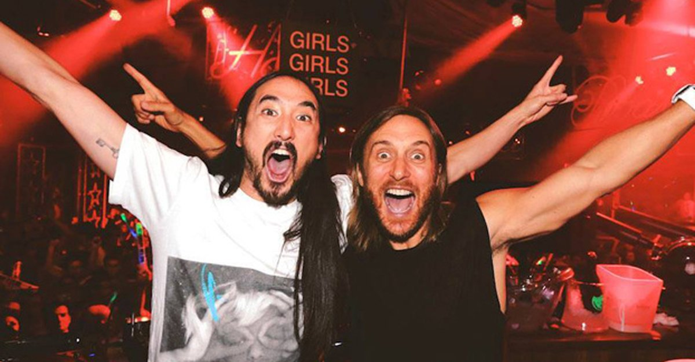

Steve Hiroyuki Aoki nació en Miami y se crió en Newport Beach (California). Se graduó de la Newport Harbor High School en 1995, fue un jugador estrella en el equipo universitario de badminton. Su padre es Hiroaki "Rocky" Aoki, japonés nacido en Tokio y su madre, Kobayashi Chizuru.1 Su padre era un antiguo luchador de lucha libre, quien también fundó la cadena de restaurantes Benihana. Él tiene dos hermanos mayores, Kana (que ahora es conocida como "Grace"), y Kevin (dueño del restaurante Sushi Doraku). También cuenta con tres medio hermanos, todos los cuales son menores: Kyle, Echo y Devon Aoki, la supermodelo y actriz. Cuando era niño, Steve vivía con su abuelo, su madre y sus dos hermanos mayores. Aoki asistió a la Universidad de California en Santa Bárbara y se graduó con dos títulos, uno en Estudios de la Mujer y el otro en Sociología. En la universidad, él produjo sus primeras producciones y realizó conciertos underground en Biko en el Santa Barbara Student Housing Cooperative, que estaba ubicado en Isla Vista, una zona residencial junto a la UCSB. Como sala de conciertos, el apartamento fue conocido comoThe pickle patch.23 A sus 20 años de edad, Aoki había lanzado su propio sello discográfico, al que llamó Dim Mak en honor a su héroe de la infancia, Bruce Lee.4 También ha integrado numerosas bandas, incluyendo This machine kills, que lanzó un álbum en el sello Ebullition Records, "Esperanza", y "The Fire Next Time". Una de sus mejores canciones (producida junto a Afrojack) fue: No Beef.
La colección de línea de ropa Dim Mak se puso en marcha en 2006.5 Una nueva moda diseñada por Steve y su hermana Devon Aoki, fue lanzado en 1999. Han colaborado con los fundadores / propietarios de Ksubi, George Gorrow y Dan solo para lanzar este proyecto juntos. "Hemos estado preparando durante dos años, desde las primeras etapas". dijo Aoki.6 Aoki y su amigo Greger, el dueño de WeSC, tuvieron una idea en conjunto para hacer los "auriculares Aoki." Se utiliza diferentes tonos de verde, ya que era el color favorito de Aoki en el momento.7 Cada temporada Aoki tiene planes para diseñar nuevos auriculares para WeSC. Aoki también está respaldado por ropa KR3W y calzado Supra, donde se desarrolla y diseña toda una gama de ropa y zapatos para las dos empresas bajo su nombre. Aoki es copropietario de un restaurante de barbacoa coreana Shin junto a Danny Masterson, Julian Casablancas de The Strokes, Mark Ronson, Laura Prepon, Jerry Rivera, entre otros. Él también es co-propietario de una empresa de gestión de llamadas Deckstar con DJ AM, junto con sus gerentes y Pablo Rosenberg. Debajo de la división de Gestión de Deckstar, Dim Mak gestión se ha formado para administrar algunos de los artistas del sello y otros DJs. En noviembre de 2009, Aoki creó su propia revista titulada "Aoki" a través de una empresa editora de revistas de celebridades llamada MYMAG.8 En enero de 2012 lanzó su álbum debut, titulado Wonderland con colaboraciones de Will.I.Am, LMFAO, Kid Cudi, Travis Barker (Blink 182) o Rivers Cuomo (Weezer) entre otros y del que ya ha lanzado los videoclips de Earthquakey People, Ladi Ladi, Heartbreaker y Cudi The Kid.9 A finales de 2013 Steve Aoki batió dos Records Guinness con la ayuda de sus fans durante una presentación en vivo en Los Angeles. El primero de los récords fue por conseguir la mayor cantidad de glowsticks brillando durante 30 segundos y el segundo por mantener al público gritando continuamente durante más de dos minutos y medio. El récord fue certificado en el momento por representates de Guinness y posteriormente le fueron entregadas a Steve Aoki sus correspondientes placas.10 Su segundo álbum de estudio, llamado Neon Future, salido el segundo semestre del 2014 y editado en dos partes, la primera en el mes de agosto y la segunda, es decir Neon Future II los primeros meses de 2015. Nuevamente la discográfica elegida para el lanzamiento será Ultra Records y su sello personal Dim Mak Records. Aoki promete romper con los géneros con este nuevo álbum. El single adelanto de Neon Future es "Rage The Night Away".